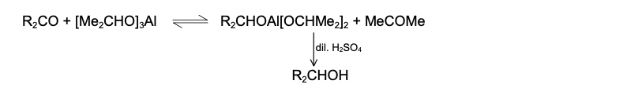

The MPV reduction is a chemical reaction in which aldehydes and ketones are reduced to alcohols using aluminium alkoxides in the presence of a secondary alcohol such as isopropanol.
When carbonyl compounds are heated with aluminum isopropoxide in an isopropanol solution, they are reduced to alcohols, and isopropoxide is oxidized to acetone, which can be easily
removed by distillation. Aldehydes are reduced to primary alcohols and ketones to secondary alcohols. This method is generally used for the reduction of ketones to secondary alcohols.
The reducing agent employed in the reaction is a specific reagent, used for reducing ketones or aldehydes in presence of reducible functional groups like double bond, nitro group etc.

R2C=O + (CH3)2CHOH → R2CHOH + (CH3)2CO
Acetone + Isopropanol → Isopropanol reduced product (secondary alcohol)
1. Formation of aluminium alkoxide complex.
2. Coordination of carbonyl compound to aluminium.
3. Hydride transfer via a six-membered cyclic transition state.
4. Formation of reduced alcohol and oxidized ketone (acetone).